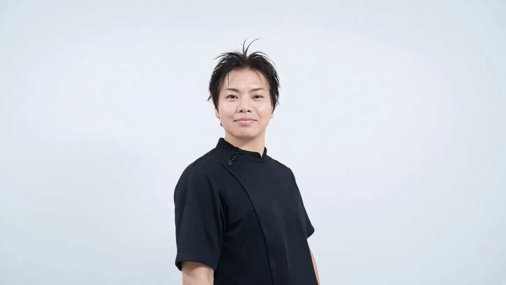

鍼灸サロンFlowStyle 院長・宏樹

私は45年にわたり武道の修行を重ね、自分の身体と向き合ってきました。
「人を活かす技あり。」
すなわち、気。そして経絡の世界。
長年の武道経験と伝統東洋医学の知恵を融合させ、現在の私の鍼灸施術へとつながっています。
鍼灸の心の師匠からいただいた「勝負は一回で決めろ」という言葉を大切に、一回一回の施術に向き合っています。
国家資格：はり師・きゅう師 ／ 札幌観光大使 ／ ヌンチャク無形無限流 創始者
2019年に札幌麻生で開業。2023年に東札幌へ移転し、女性専用鍼灸サロンFlowStyleとして施術を行っています。
女性が安心して身体の悩みを相談できる場所を目指しています。